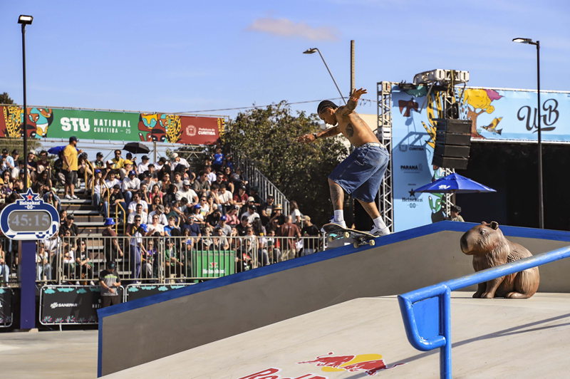
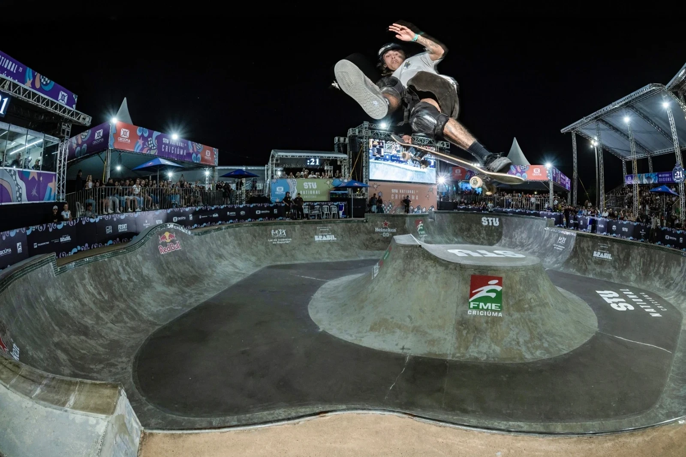
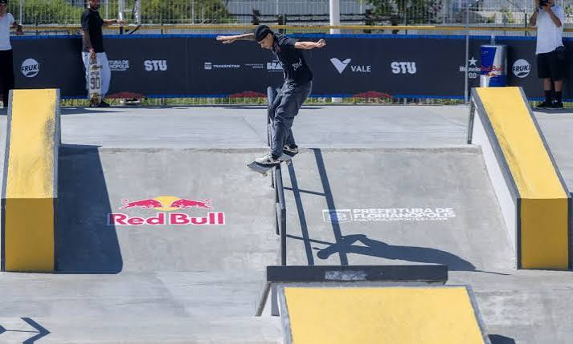
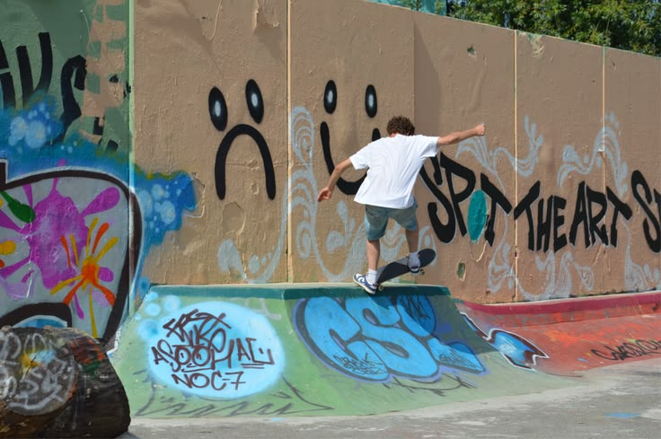

A história do Skate
O skate surgiu na década de 1950, nos Estados Unidos, quando surfistas procuravam uma forma de praticar o equilíbrio e as manobras em dias sem ondas. No início, eles adaptavam rodas de patins em tábuas de madeira, criando os primeiros skates. Por isso, o esporte ficou conhecido como "surfe do asfalto".
Durante a década de 1970, o skate passou por uma grande evolução com a criação das rodas de poliuretano, que ofereciam mais aderência e estabilidade. Nessa época, surgiram também as primeiras competições e pistas, tornando o esporte mais popular e seguro.
Nos anos 1980 e 1990, o skate ganhou ainda mais destaque com o desenvolvimento de novas modalidades, como o street, praticado em ruas, escadas e corrimãos, e o vertical, realizado em rampas. Além de um esporte, o skate passou a representar um estilo de vida, influenciando a música, a moda e a cultura urbana.
Atualmente, o skate é praticado em todo o mundo por pessoas de diferentes idades. Seu reconhecimento cresceu ainda mais quando passou a fazer parte dos Jogos Olímpicos de Verão de Tóquio 2020, marcando sua estreia como modalidade olímpica. Hoje, o skate continua evoluindo, incentivando a criatividade, a superação e a inclusão por meio do esporte.



